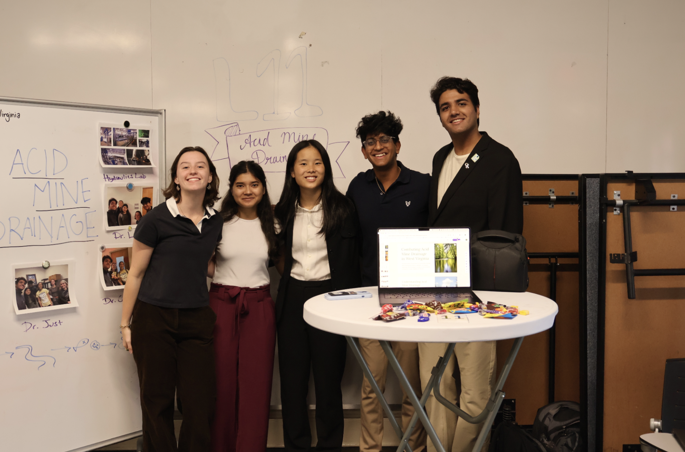

A living record of where West Virginia's coal country left its chemistry in the water — and where that same legacy holds elements worth recovering.
When sulfide minerals are exposed to oxygen and water during coal extraction, they produce sulfuric acid. That acid dissolves metals, kills aquatic life, and continues flowing into streams for centuries after mines close.
West Virginia — the heart of the Appalachian coalfields — carries more documented acid mine drainage than almost anywhere on Earth. This atlas surfaces that damage: where it is, how severe it is, and what else it might contain.
AMD is a chemical cascade. These four measurements define the damage — and the opportunity.
USGS live data, NHDPlus streams, HUC12 watersheds — one interactive layer over the entire state.
AMD treatment sludge concentrates rare earth elements as they co-precipitate with iron and aluminum hydroxides. Some Appalachian AMD systems produce sludge at ore-comparable REE grades.
Low pH keeps REEs mobile in AMD water. When pH rises during treatment, they bind to iron floc — which means existing treatment plants are already intercepting the REE-bearing flux.
Indicative concentrations in AMD sludge from published Appalachian studies. Hover to reveal values.
All layers published under CC BY 4.0 via ArcGIS Online. Export CSV, Shapefile, or GeoJSON from the map viewer.
Our team is advised by the GT Grand Challenges program, led by Dr. Jeffrey Davis and Dr. Ilya Gokhman. Alongside Georgia Tech's technical infrastructure, we are supported by researchers and professors from West Virginia University who bring deep domain expertise and local knowledge of AMD issues.
We have also interviewed stakeholders directly involved in AMD cleanup efforts — hearing their perspective from tackling acid mine drainage on the ground. This interdisciplinary collaboration ensures our platform is technically robust, scientifically accurate, and built for the people who need it most.
Leads the GT Grand Challenges program, guiding interdisciplinary student teams toward scalable, real-world solutions to complex environmental and societal problems.
Co-leads the Grand Challenges initiative at Georgia Tech, providing strategic direction and technical mentorship to the AMD & REE research team.
A leading expert in coal-mine drainage and contaminant transport through water systems. Her extensive experience in AMD remediation has guided our scientific approach and ensured the accuracy of this platform.

"This work stands on the data infrastructure built by federal agencies, state regulators, and researchers who have monitored these damaged waters for decades — often with little recognition."
This atlas was developed as a Grand Challenges project at Georgia Tech in collaboration with West Virginia University, combining Georgia Tech's innovation with WVU's on-the-ground expertise to create a sustainable and impactful resource for AMD monitoring and mitigation. All findings are preliminary and subject to revision as datasets evolve.